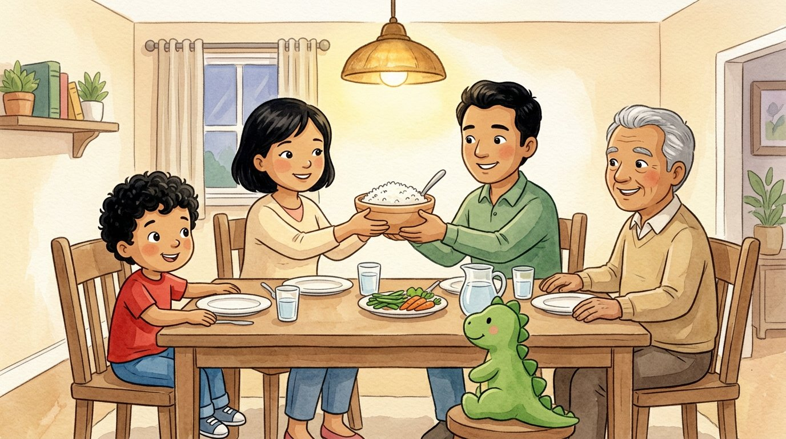
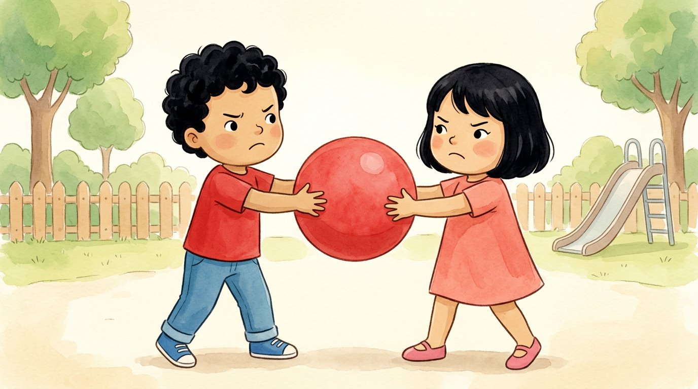
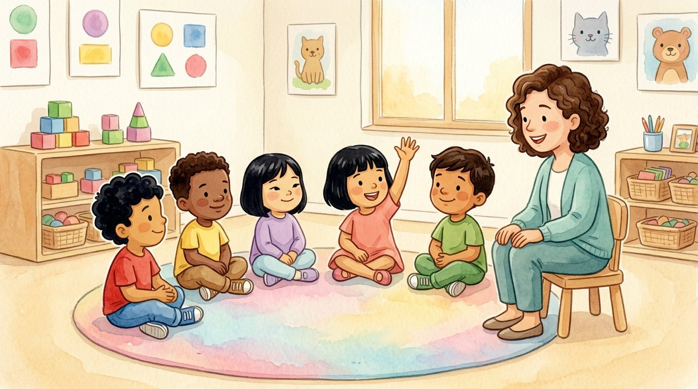
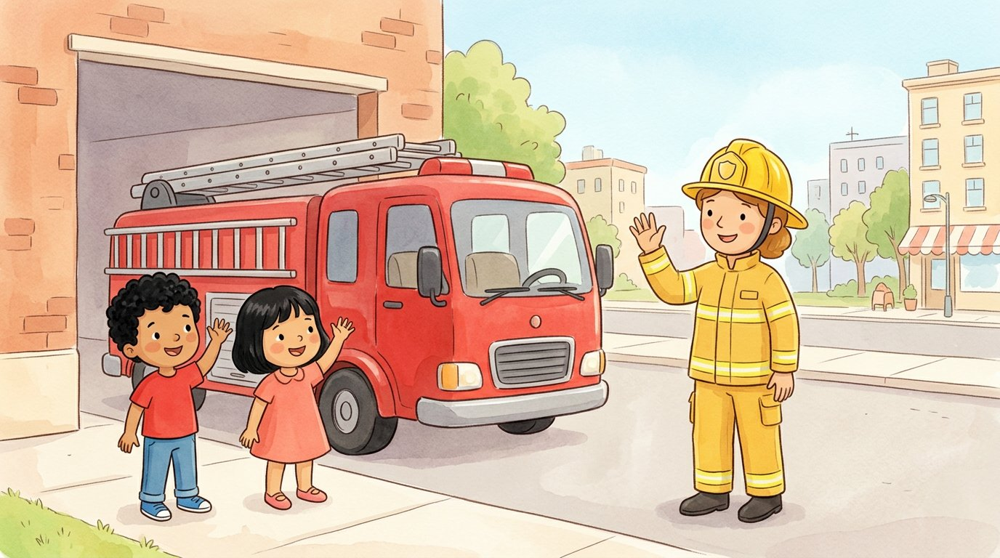
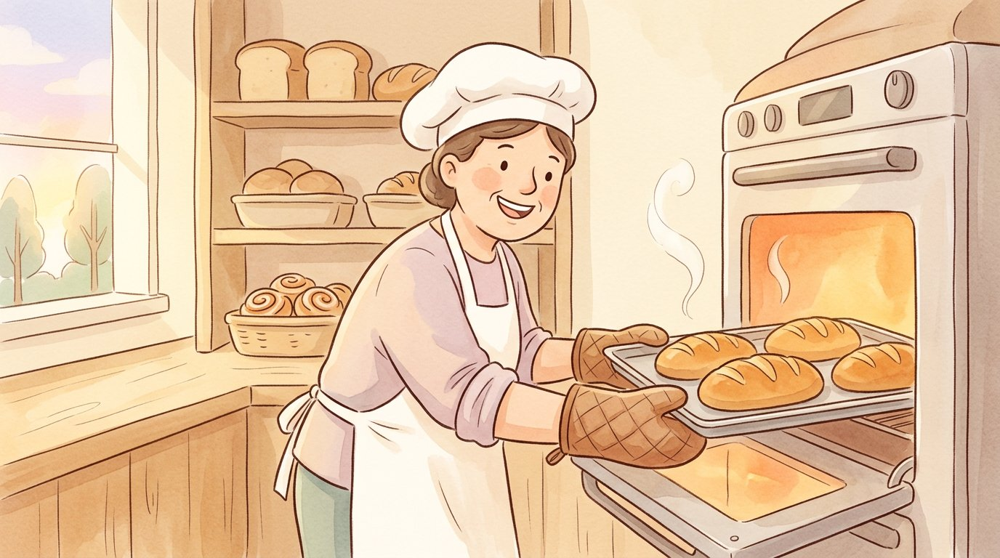
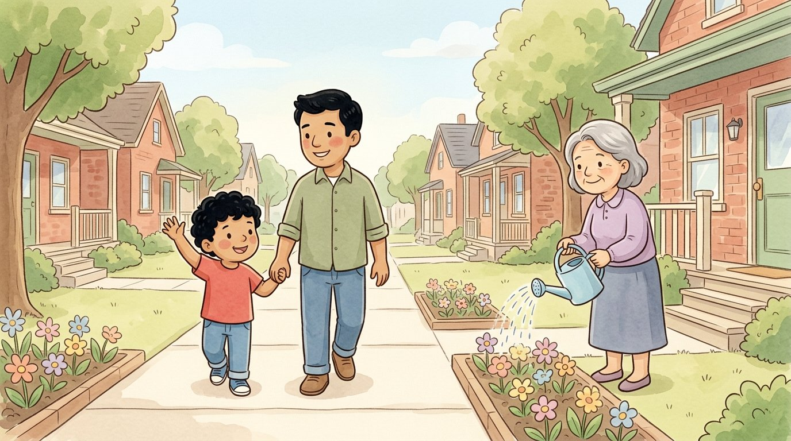
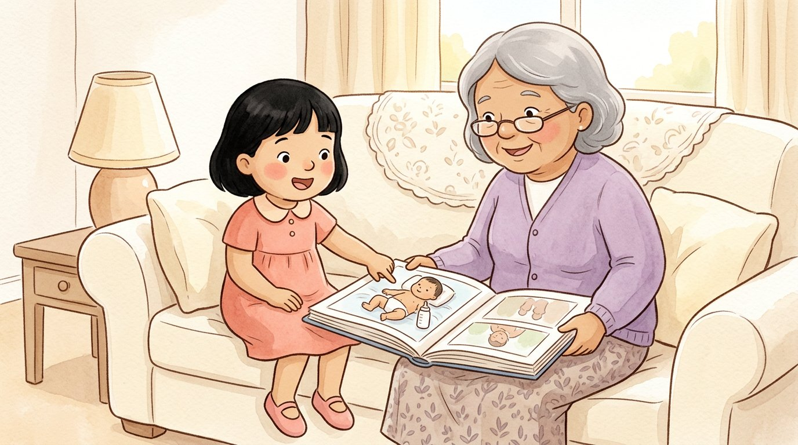
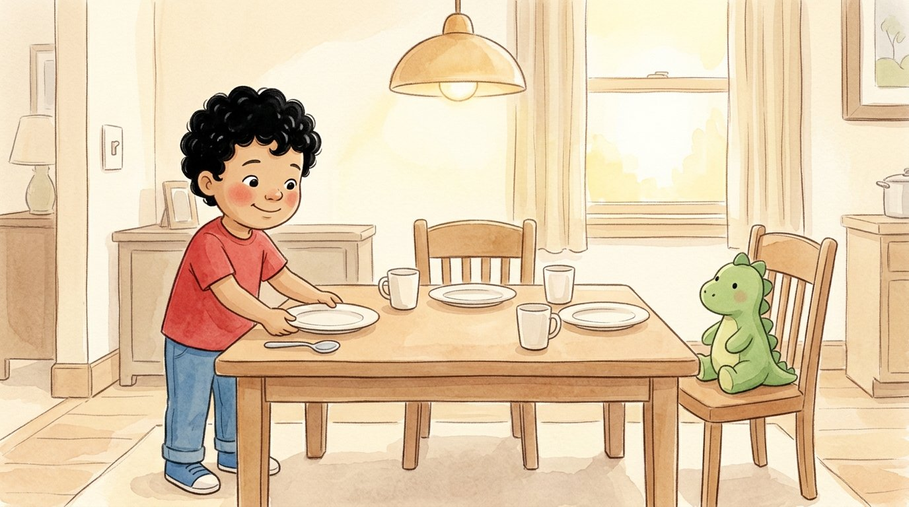

Libro · Prekínder
Estudios sociales
Cuentos para escuchar con Adrián y Génesis
Cuentos cortitos de dos o tres escenas. Lumi los lee en voz alta y cada palabra se ilumina mientras la dice: así los niños descubren que lo que se dice está escrito.
Toca un cuento para escucharlo.

Mi familia
La pelota roja
Las reglas del salón
Los que nos ayudan
¿Quién hace el pan?
Mi barrio
Cuando era bebé
Yo ayudo en casa
José M. Fernández · Claude (Anthropic) · Ilustraciones generadas con inteligencia artificial